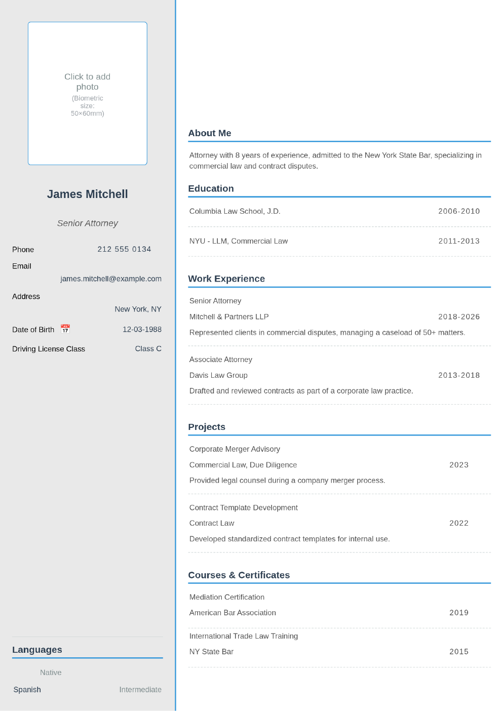

Lawyer CV Example and Writing Guide
✨ Edit this template on MobilCV - free, no sign-up!
🚀 Edit This Template on MobilCVWhen applying to law firms or in-house legal positions, your CV needs to clearly demonstrate both your academic background and your practical legal experience. Recruiters in this field look for specific details that set a strong lawyer CV apart.
Bar Admission and Licensing
Alongside standard contact details, your bar admission status (and jurisdiction, if relevant) is one of the first things reviewers look for. State this clearly near the top of your CV, either in your summary or as a dedicated line.
Order Your Education Section Correctly
List your law degree, and any LLM or further qualifications, from most recent to oldest. If you completed a clerkship or articling period, include it here or in a separate "Training" section.
Highlight Your Practice Area in the Experience Section
Instead of a generic "lawyer" title, clearly state which areas of law you specialize in (corporate, employment, criminal, real estate, family law, etc.). Back up your experience with concrete numbers - caseload, hearings attended, or matters handled.
- Example: "Represented clients in commercial disputes for 3 years, managing a caseload of 50+ matters."
- Example: "Drafted and reviewed contracts as part of a corporate law practice."
What to Include in the Skills Section
Alongside legal research, contract drafting, negotiation and case management, technical skills like e-discovery or case management software are worth including - they catch a recruiter's eye.
Certifications and Further Training
Mediation certifications, specialized legal training, or continuing legal education (CLE) credits deserve their own section on your CV.
What to Include in a Lawyer CV
- Contact details
- Qualification and admission (for example solicitor or barrister in England and Wales, or the state bar you are admitted to in the US)
- A short professional summary with your practice areas
- Legal experience: firm or organisation, practice area, the type of matters you worked on and your role
- Education, including law school and professional training
- Legal research tools and languages
- Publications, moots or pro bono work, if relevant
State Your Admission Clearly
Legal employers first check whether you can practise. In England and Wales, say whether you are a solicitor (regulated by the Solicitors Regulation Authority) or a barrister (called to the Bar). In the United States, list each state bar you are admitted to. Trainees and students can give an expected admission date.
Example Experience Bullet Points
- Example: “Drafted and negotiated commercial contracts for clients in the technology sector.”
- Example: “Conducted legal research and prepared memos on employment law questions for partners.”
- Example: “Prepared court bundles and witness statements in civil litigation matters.”
- Example: “Supported due diligence on company acquisitions, reviewing corporate and employment documents.”
Confidentiality on Your CV
Describe the type of matter, the sector and your role rather than naming clients. Only name a client or case if it is already public and your employer allows it.
Common Mistakes
- Typos and inconsistent formatting. Legal employers read CVs as a sample of your attention to detail.
- Vague lines such as “handled cases” with no practice area or role.
- Revealing confidential client information.
- Leaving your admission status unclear.
Frequently Asked Questions
Should I name clients on my legal CV?
Usually not. Describe the sector and type of work instead, unless the matter is public and your employer has agreed.
How long should a lawyer CV be?
Two pages is a common length for qualified lawyers; one page is often enough for students and trainees. Follow any limit the employer sets.
What should a law student put on a CV?
Your degree and grades, legal work experience or vacation schemes, moots, pro bono work, and skills such as research and drafting.
Should I list legal research tools?
Yes, briefly. Name the databases you have used, for example Westlaw or LexisNexis.
Conclusion
Clarity, concrete examples, and a clearly stated practice area are what make a lawyer CV stand out. Click the button below to start filling in a free CV template based on these tips.
📄 Filled-In Example CV
A sample CV filled in for a Lawyer position, following the tips above. You can fill in your own information the same way.

✨ Create your CV now!
🚀 Create Your CV With MobilCV